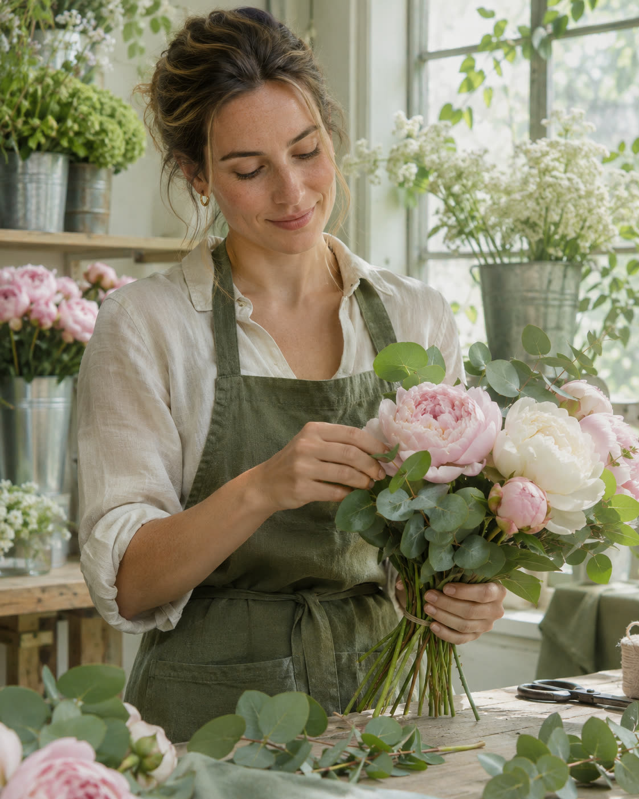
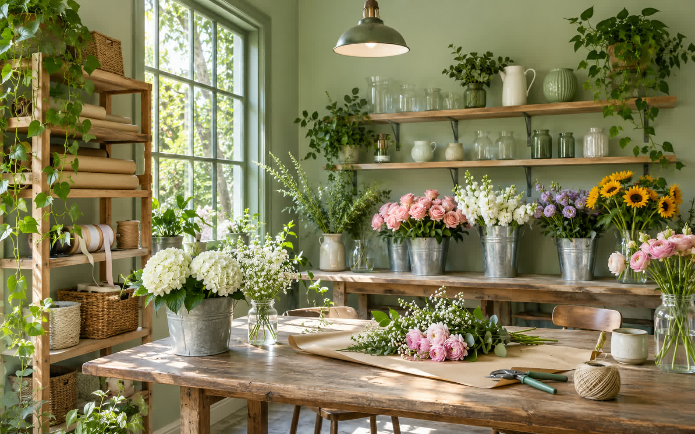

Маленькая студия с большим столом
«Ботаника» — шесть флористов и мастерская на Садовой. Работаем с 2019 года и собираем около 900 букетов в месяц.

Начали с ведра пионов и одного велосипеда
Первые букеты я собирала на подоконнике и развозила сама — на велосипеде по Вахитовскому району. Хотелось, чтобы цветы в Казани были как в саду у бабушки: живые, немного неровные, с запахом.
Сегодня у нас светлая мастерская, свой холодильник на 3 000 стеблей и прямые поставки от фермеров из Татарстана, Кении и Эквадора. Но правило осталось прежним: собираем только из того, что сами бы поставили дома.
Алсу Гариповаоснователь и главный флорист

Во что мы верим
Сезонность
Весной — тюльпаны и сирень, летом — пионы и полевые, осенью — георгины. Так букеты дешевле и стоят дольше.
Фото до отправки
Присылаем фото готового букета. Не нравится — пересоберем, это бесплатно.
Без лишнего пластика
Упаковка из бумаги и льна, ленты из хлопка. Коробки можно вернуть курьеру.
Гарантия 7 дней
Если букет завял раньше — привезем новый или вернем деньги. Нужна только фотография.
Доставка по Казани
Ежедневно с 8:00 до 22:00, в 2-часовой интервал или к точному времени. Ночная доставка — по договоренности.
Зоны и стоимость
- По Казани бесплатно при заказе от 5 000 ₽.
- Курьер звонит за 15 минут. Если получателя нет — согласуем повторную доставку бесплатно.
- Можно анонимно: не скажем, от кого букет, пока вы не разрешите.
- Самовывоз из студии на ул. Садовой, 12 — бесплатно, через 40 минут после заказа.
Оплата
Мир, Visa, Mastercard. Пришлем ссылку после звонка флориста.
Без комиссии, деньги приходят мгновенно.
При получении, если заказываете для себя.
Корпоративные заказы и подписки для офисов, закрывающие документы.
Частые вопросы
Будет ли букет таким же, как на фото?
Да, по стилю, размеру и оттенкам. Если какого-то цветка нет в поставке, заменим похожим и обязательно предупредим. Фото готового букета пришлем до отправки.
Можно заказать букет на сегодня?
Да. Заказы до 20:00 привозим в тот же день, срочная доставка — за 90 минут по всему городу.
Как ухаживать за букетом, чтобы он стоял дольше?
Подрезайте стебли наискосок на 1–2 см и меняйте воду раз в два дня. К каждому букету кладем пакетик подкормки и карточку ухода.
Что если получателя не будет дома?
Курьер позвонит заранее. Если не дозвонимся — свяжемся с вами и бесплатно привезем повторно в удобное время.
Делаете ли вы оформление свадеб?
Да: букет невесты, бутоньерки, арка, декор столов. Расскажите о дате и площадке — пришлем смету за один день.
Заходите в гости
Студия
Казань, ул. Садовая, 12
5 минут от метро «Площадь Тукая»
Связь
+7 (900) 000-00-00
Telegram и WhatsApp: @example
Время работы
Ежедневно 8:00–22:00
Прием заказов онлайн — круглосуточно